_Forsattsblad_thumb.jpg "Försättsbladet på rapporten")
_Sida_1_thumb.jpg "Första sidan av rapporten")
_Sida_2_thumb.jpg "Andra sidan av rapporten") 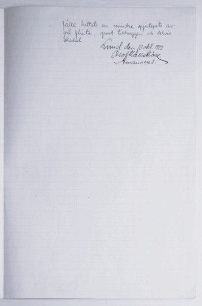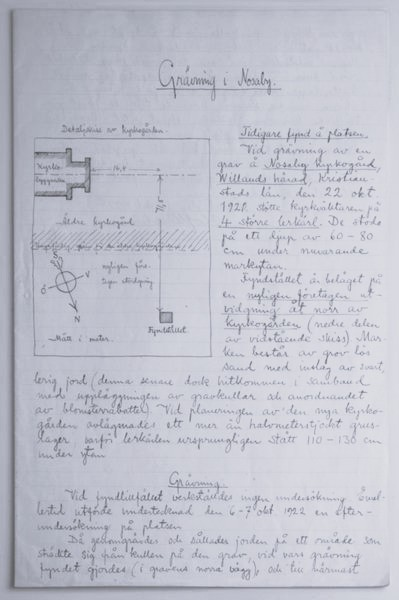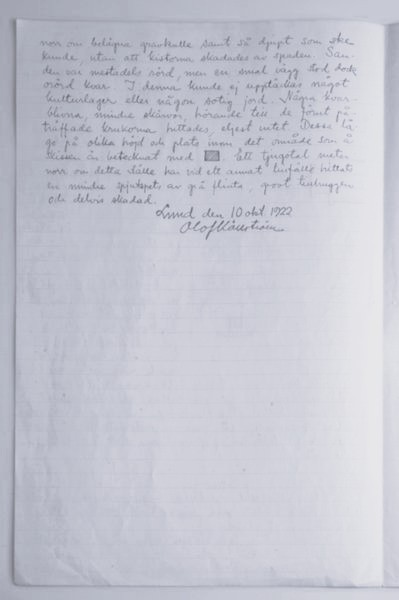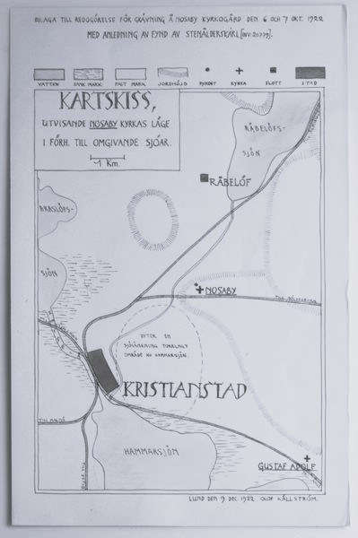
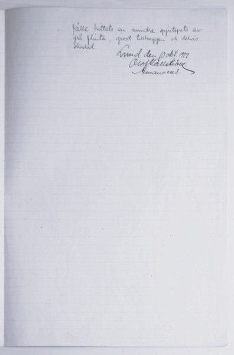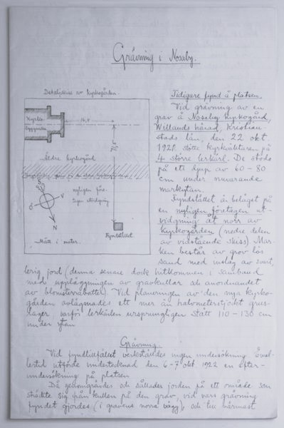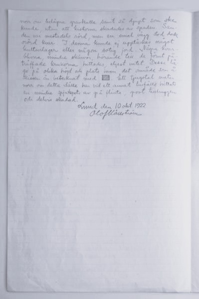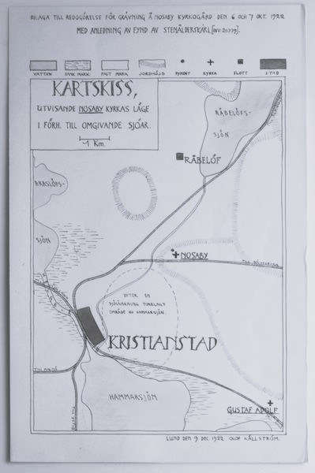_Fotografi_2_Lerkarl_thumb.jpg "Lerkärl") 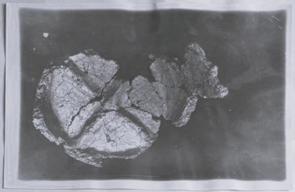
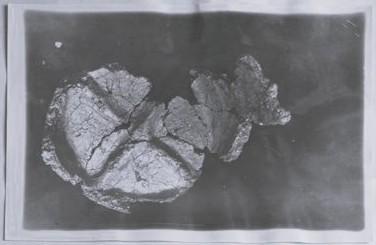_Fotografi_Utgravningsplats_thumb.jpg "Utgravningsplats") 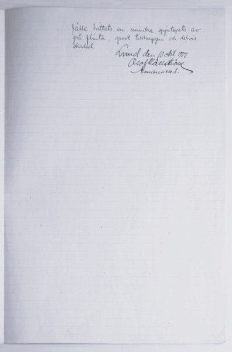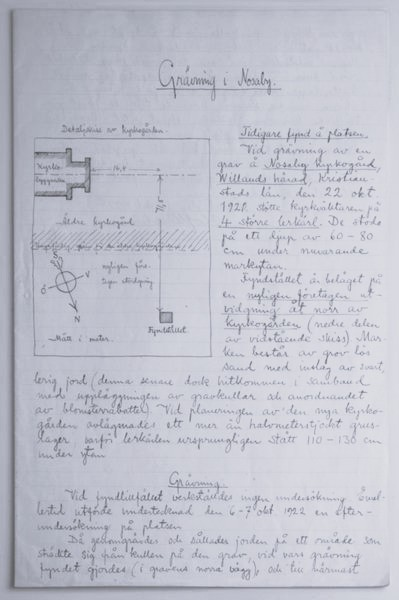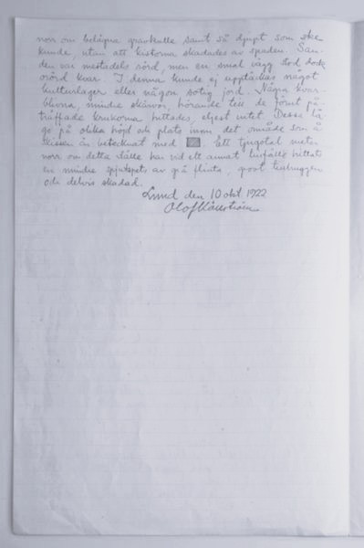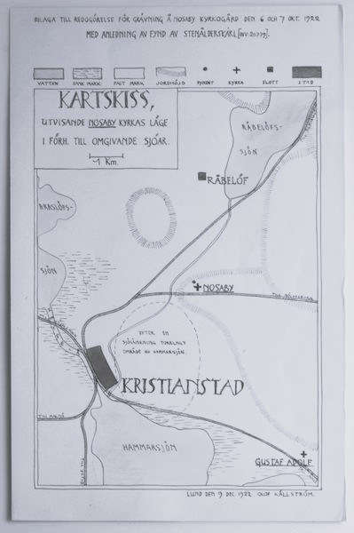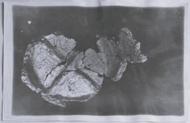
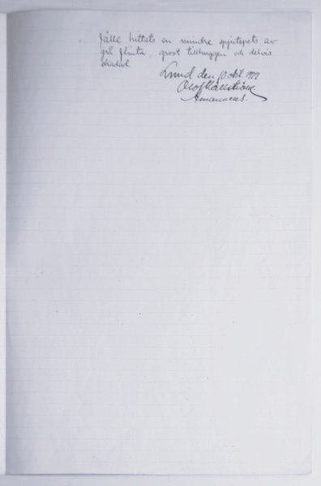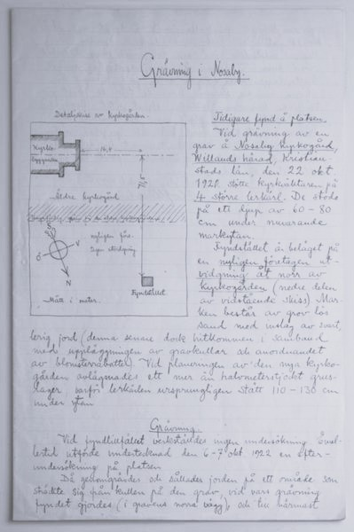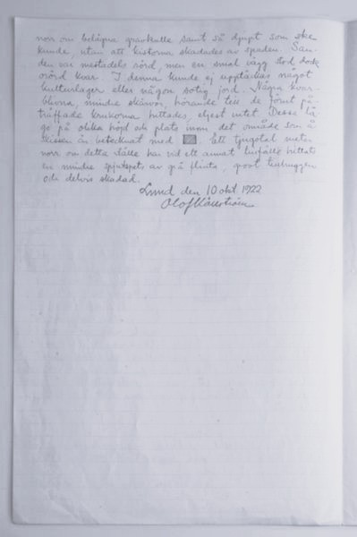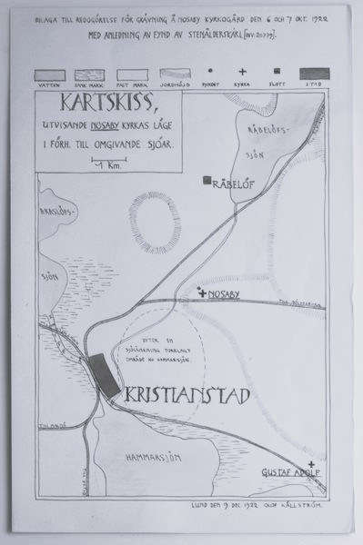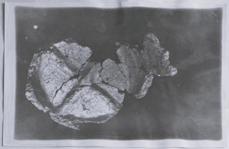Beskrivning: Detta är en digitaliserad version av en utgrävningsrapport från Lunds historiska museums magasin. Rapporten berör en grävning av en grav på Nosaby kyrkogård, i Villands härad, Kristianstads län, den 22 okt. 1921. Vid utgrävningen fann en kyrkväktare fyra större lerkärl. Vid fyndtillfället verkställdes ingen undersökning. 1922 gjorde Olof Källström en efter- undersökning av platsen. Det är efterundersökningen som har dokumenterats i utgrävningsrapporten. Rapporten är handskriven (försättsbladet undantaget) och består av sammanlagt 10 A4-sidor, inklusive försättsblad, samt bilagor i form av en karta och fyra fotografier.
Författare:
Olof Källström
Transkribering av:
Marie Anneling, Amanda Torbjörnsdottir och Emma Walldén
Institution:
Lunds historiska museum
Universitet:
Högskolan i Borås
Maj 2025